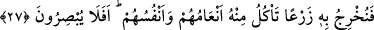

HÂLÂ KULAK
VERMEZLER Mİ?
23. Andolsun biz Musa’ya Kitap verdik, -(Rasûlüm!) Sen de (Mûsâ’nın o kitaba)
kavuştuğundan şüphe etme- ve onu İsrailoğulları’na hidâyet rehberi kıldık.
24. Sabrettikleri ve âyetlerimize kesinlikle inandıkları zaman, onların içinden,
buyruğumuzla doğru yola ileten rehberler tayin etmiştik.
25. Muhakkak ki Rabbin, ihtilâf etmekte oldukları şeyler hakkında kıyâmet günü
onların aralarında hükmedecektir.
26. Halen yurtlarında gezip dolaştıkları kendilerinden önceki nice nesilleri helâk
edişimiz onları doğru yola sevk etmedi mi? Bunlarda elbette ibretler vardır. Hâlâ
kulak vermezler mi?
27. Kupkuru yerlere suyu ulaştırdığımızı, onunla gerek hayvanlarının gerekse
kendilerinin yiyegeldikleri ekini çıkarmakta olduğumuzu da görmediler mi? Hâlâ da
göremeyecekler mi?
28. Eğer doğru söylüyorsanız, bu fetih (ve hüküm) günü hani ne zaman? derler.
29. De ki: Fetih (ve hüküm) gününde inkârcılara (o gün ettikleri) îmanları fayda
vermeyecek ve kendilerine mühlet de tanınmayacaktır!
30. Artık sen onları bırak ve bekle. Zaten onlar da beklemektedirler.
“Andolsun biz Musa’ya Kitap” yâni Tevrat’ı “verdik. (Rasûlüm!) Sen de” Mûsâ’nın o